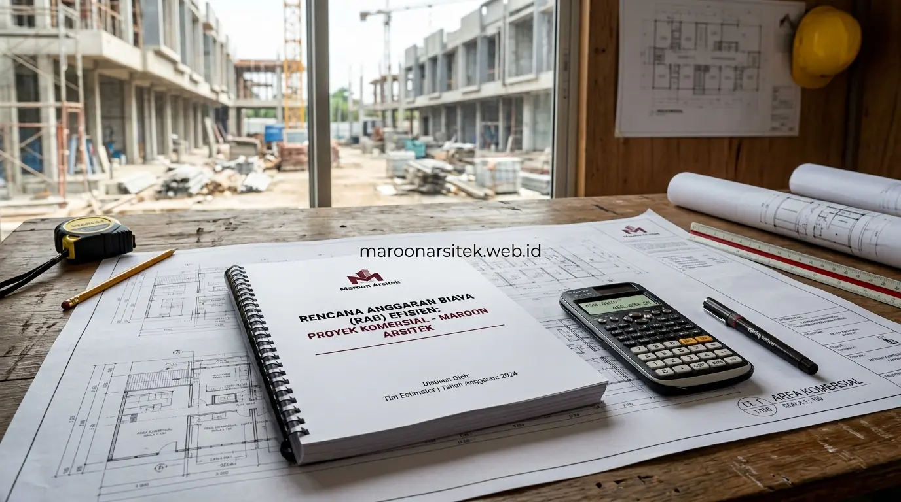

Jasa kontraktor bangunan komersial menangani pembangunan ruko dan kantor dengan perencanaan jadwal yang terikat kontrak serta penyusunan RAB yang efisien, sehingga proyek dapat selesai tepat waktu tanpa pemborosan anggaran yang tidak perlu. Maroon Arsitek melalui layanan jasa kontraktor bangunan menerapkan sistem manajemen proyek yang dirancang khusus untuk kebutuhan bangunan komersial dengan target operasional yang jelas.
Keterlambatan penyelesaian bangunan komersial berdampak langsung pada kerugian operasional bisnis, karena setiap penundaan berarti tertundanya pula waktu bangunan tersebut mulai menghasilkan pendapatan. Bagian berikut menguraikan pendekatan kerja yang menjawab kebutuhan ketepatan waktu dan efisiensi anggaran pada proyek ruko maupun kantor.
Perencanaan Jadwal Proyek yang Terikat Kontrak Kerja
Perencanaan jadwal proyek disusun secara rinci sejak awal dan dituangkan dalam kontrak kerja, mencakup target penyelesaian setiap tahap konstruksi hingga estimasi waktu total penyelesaian proyek bangunan komersial. Keterikatan jadwal ini menjadi jaminan kepastian waktu bagi klien yang membutuhkan bangunan segera beroperasi.
Setiap tahap konstruksi memiliki target waktu spesifik yang saling terhubung, sehingga keterlambatan pada satu tahap dapat segera diidentifikasi dan dicarikan solusi percepatan sebelum berdampak pada keseluruhan jadwal proyek yang telah disepakati bersama tim jasa konstruksi bangunan komersial kami.
Tim proyek dialokasikan sesuai skala pekerjaan pada setiap tahap, memastikan sumber daya yang memadai tersedia untuk menjaga kecepatan pengerjaan tanpa mengorbankan kualitas hasil konstruksi yang menjadi standar kerja perusahaan.
Identifikasi Dini Potensi Keterlambatan Antar Tahap
Kebutuhan kepastian jadwal dijawab melalui identifikasi dini potensi keterlambatan pada setiap tahap konstruksi, sehingga solusi percepatan dapat segera diterapkan sebelum dampaknya meluas ke tahap-tahap berikutnya dalam keseluruhan proyek.
Identifikasi ini dilakukan melalui pemantauan progres rutin, memungkinkan tim manajemen proyek mengambil tindakan korektif secepat mungkin ketika ditemukan indikasi pekerjaan yang berpotensi tidak sesuai target waktu yang direncanakan.
Penyusunan RAB Efisien Tanpa Mengorbankan Standar Kualitas
RAB proyek bangunan komersial disusun secara efisien melalui pemilihan spesifikasi material yang sesuai kebutuhan fungsional, tanpa penambahan spesifikasi berlebih yang tidak memberikan nilai tambah signifikan terhadap operasional bisnis. Efisiensi ini menjadi pertimbangan penting bagi pengusaha yang ingin mengoptimalkan anggaran investasi properti komersial.
Perhitungan RAB mempertimbangkan skala kebutuhan bisnis yang akan menempati bangunan, sehingga alokasi anggaran difokuskan pada elemen yang benar-benar mendukung operasional, seperti struktur, sistem kelistrikan, dan tata ruang fungsional seperti yang dirancang pada jasa desain bangunan komersial.
Efisiensi RAB juga mencakup evaluasi terhadap material alternatif dengan kualitas setara namun harga lebih kompetitif, membantu menekan biaya konstruksi tanpa mengorbankan standar kekuatan dan keawetan bangunan komersial dalam jangka panjang.

Evaluasi Material Alternatif untuk Efisiensi Anggaran
Kebutuhan efisiensi anggaran tanpa mengorbankan kualitas dijawab melalui evaluasi material alternatif yang memiliki spesifikasi teknis setara namun dengan harga lebih kompetitif dibanding material dengan merek premium pada kategori yang sama.
Evaluasi ini dilakukan oleh tim teknis berpengalaman, memastikan material alternatif yang direkomendasikan tetap memenuhi standar kekuatan dan daya tahan yang dibutuhkan untuk bangunan komersial dengan intensitas penggunaan tinggi.
Pengawasan Proyek untuk Menjamin Kualitas dan Ketepatan Waktu
Pengawasan proyek dilakukan secara konsisten sepanjang proses konstruksi, memastikan setiap tahap pekerjaan sesuai standar kualitas sekaligus berjalan sesuai jadwal yang telah disepakati dalam kontrak kerja bangunan komersial. Pengawasan ini menjadi jembatan antara target waktu dan standar kualitas yang harus dipenuhi secara bersamaan.
Laporan progres disampaikan secara berkala kepada klien, memberikan transparansi penuh atas perkembangan proyek sekaligus kesempatan untuk mendiskusikan penyesuaian apabila diperlukan sebelum memasuki tahap konstruksi berikutnya.
Setiap temuan ketidaksesuaian selama pengawasan segera ditindaklanjuti, mencegah dampak yang lebih besar terhadap jadwal maupun kualitas hasil akhir bangunan komersial yang sedang dikerjakan, termasuk pada proyek kontraktor cafe dan restoran yang memerlukan spesifikasi MEP khusus.
Pelaporan Progres Berkala sebagai Bentuk Transparansi
Kebutuhan transparansi selama proyek berlangsung dijawab melalui pelaporan progres berkala yang mencakup capaian fisik pekerjaan dan kesesuaiannya dengan jadwal yang telah disepakati sejak awal kontrak kerja.
Pelaporan ini memberikan klien gambaran jelas atas perkembangan proyek tanpa harus memantau lokasi secara langsung setiap hari, sekaligus menjadi dasar komunikasi apabila diperlukan penyesuaian rencana selama proses konstruksi.